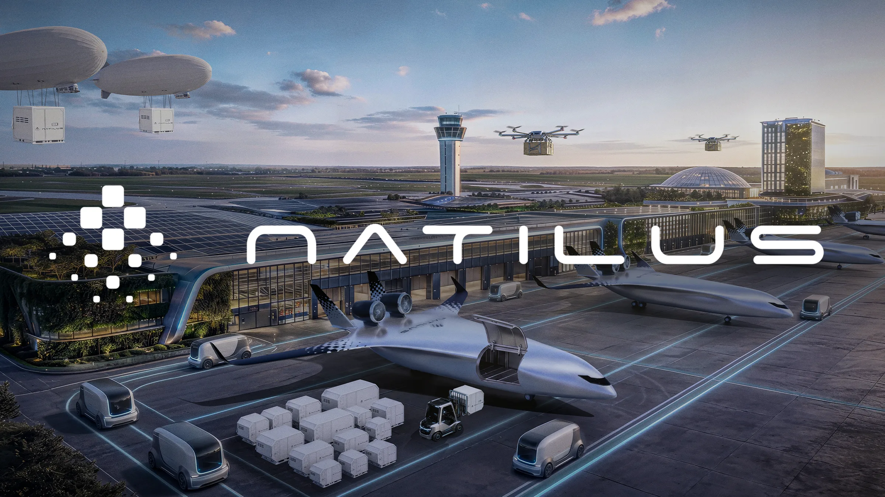
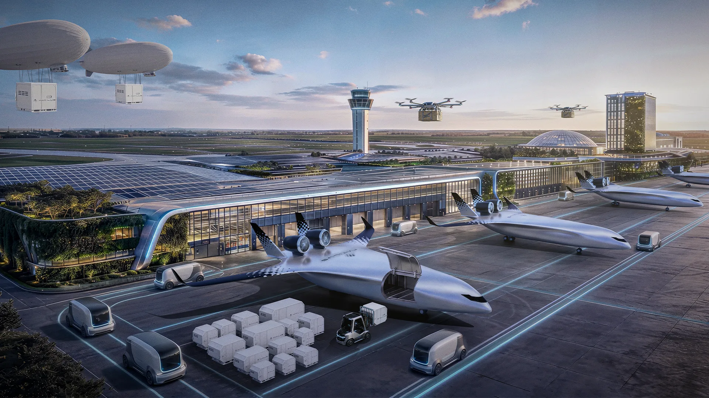
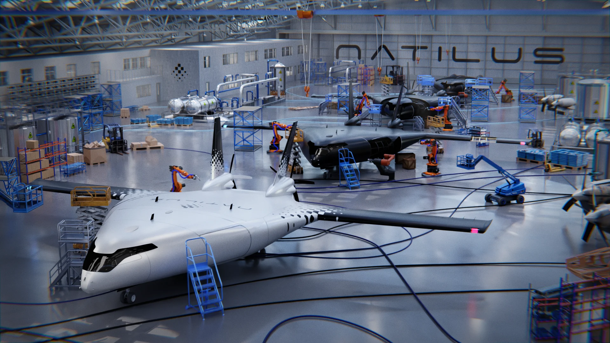
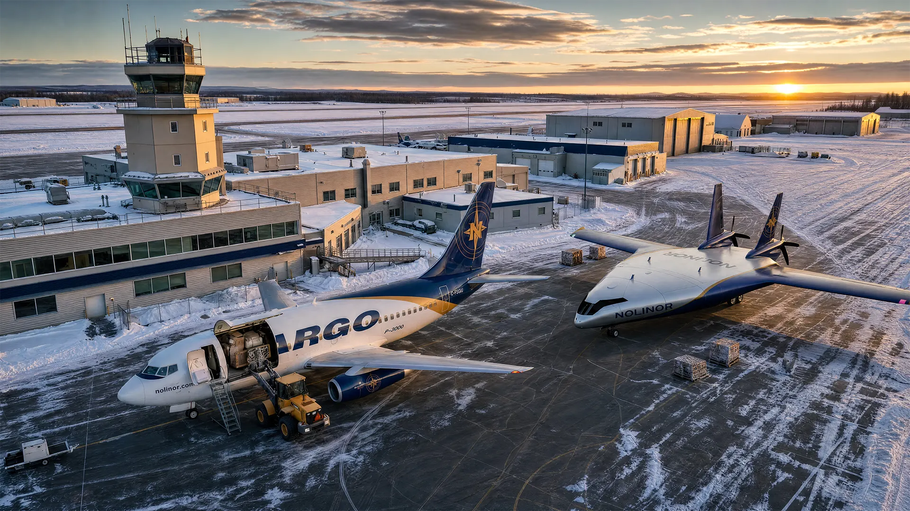
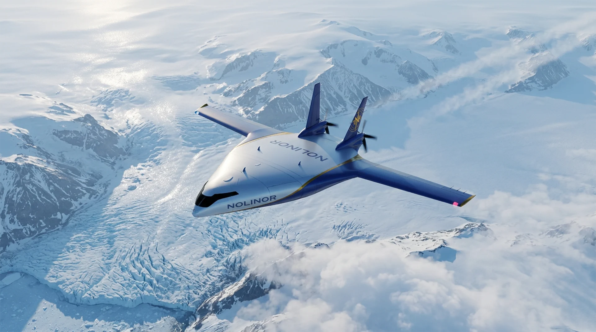
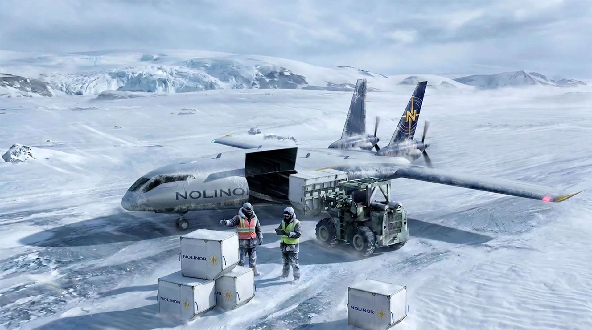
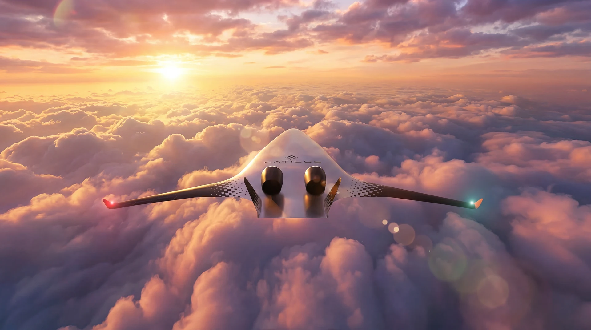
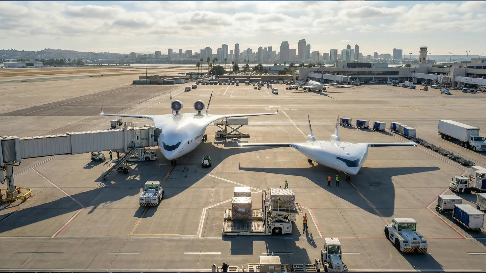

01 · Futuristic Airport
A futuristic airport, composed in Photoshop — the planes and some of the vehicles are 3D renders, layered together with other AI-generated elements. Building it this way, rather than leaving it fully to AI, kept control over exactly what appears in the scene.

02 · Hangar
A hangar scene, created entirely in 3D: I used Hunyuan 3D to quickly generate some of the basic models that helped me set up the scene, so I could focus on the composition instead of modeling everything from scratch. Created in Blender and Substance, with post-production in Photoshop.

03 · Aircraft integration
Each one combines a 3D render of the aircraft — accurate in shape, scale and texture — with an AI-generated environment and a Photoshop compositing pass, keeping full control over the final image.




